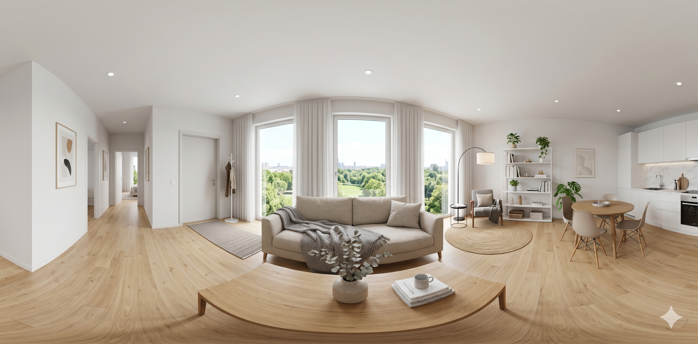
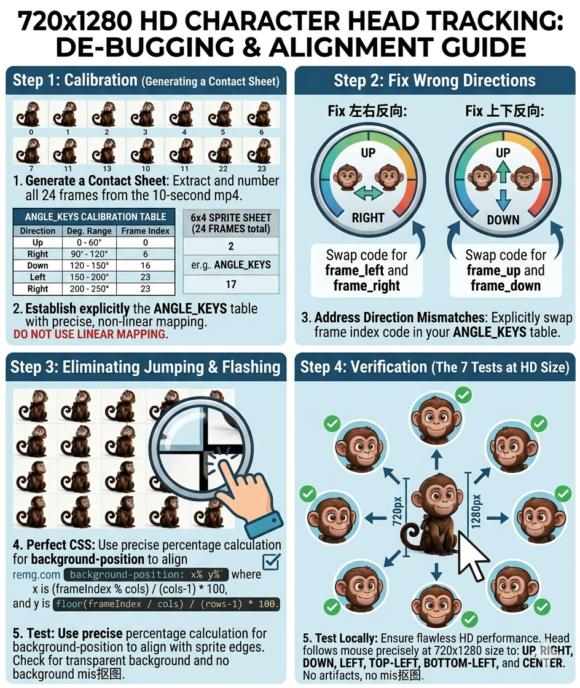
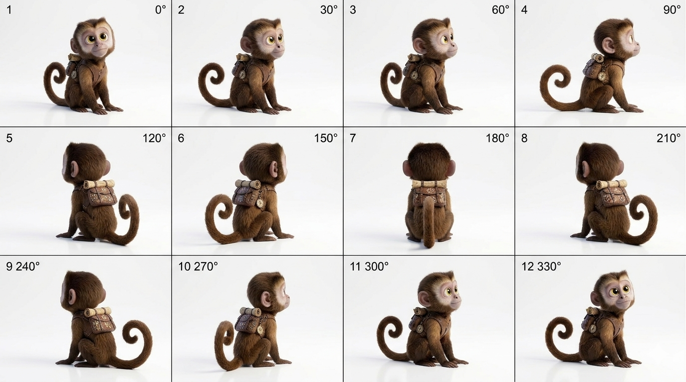
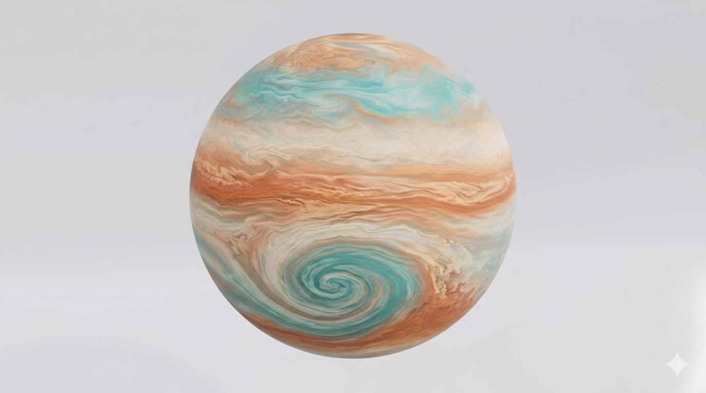

AI 资讯与短讯
模型发布、API 变动、安全政策与巨头动向 — 以短讯为主，避免标题党式转述。
条目优先选自 OpenAI、Anthropic、Google DeepMind 等一手机构博文；本站不爬全文，只保留标题与直达链。
aogl.cn 是个人维护的生成式 AI 备忘站：聚合官网博文与文档入口，方便自己查阅，也欢迎路过收藏。所列外链均在新标签页打开；正文多为摘录或短评，不是商业评测机构，定价、地区策略与条款请以各公司页面为准。
下方「内容板块」对应页内 RSS 分类；「工具分类导航」按场景手工整理常见产品官网（对话、生图、视频、代码等），省得翻收藏夹。若链接失效、名称变更或希望撤下某站，可在仓库发 GitHub Issue 说明，有余力时会改。
本站不当新闻站用：长文若写会单独开坑；列表与短讯会尽量标注时间与出处，便于日后核对。联系维护者（邮箱、GitHub 等）见 联系我们。






模型发布、API 变动、安全政策与巨头动向 — 以短讯为主，避免标题党式转述。
条目优先选自 OpenAI、Anthropic、Google DeepMind 等一手机构博文；本站不爬全文，只保留标题与直达链。
按写作、编程助手、生图、本地/离线方案等场景更新榜单与阅读线索。
侧重可复现的选型信息与性价比讨论，不追求「全网最全」；与纯营销榜单无关。
导图式梳理：大模型托管、微调、RAG、智能体与多媒体管线，便于从架构上选型。
同一品类只保留常用主站与少数替代入口；冷门口子、需邀请的闭测产品一般不收，以免链接迅速失效。
提示词模式、评测维度、红队入门、成本控制与真实项目接入经验。
偏工程实践与边界条件（上下文长度、延迟、合规），不替代官方文档；动手前请仍以厂商说明为准。
以下为常见生成式 AI 与相关基建的官网入口（新标签页打开）；图标使用各站 favicon 服务拉取，若某站图标缺失或变形属正常现象。
分类顺序大致按「对话 → 生图/视频 → 编程与 Agent → 数据与部署」编排，便于从任务反查工具；不包含钓鱼站、纯聚合下载页或明显灰色地带站点。若你认为某入口应下架或补一类常用工具，欢迎通过 GitHub Issue 指出具体域名与理由。
本块为站内 RSS 拉取摘要：偏模型与产品发布、政策与安全通告；更新频率取决于上游 feed，非实时新闻站。
侧重榜单解读、场景化选型与「够用就好」的性价比讨论；与带货或刷榜无关。
与上方「工具分类导航」呼应：这里收的是文章里谈架构、路线图与对比的内容，便于和纯官网入口对照阅读。
偏实践笔记：提示词、评测、成本、安全与落地踩坑；适合已有基础、准备接 API 或上生产的读者。
下列 30 条亦为三家官网一手文章，与上方「资讯 / 排行 / 分类 / 技巧」区块中的链接不重复（外链将离开本站）。
榜单与推荐均属主观整理，采用前请自行核对价格、条款与数据处理方式。 若投放广告，正文需充足原创，并保留隐私政策链接（见页脚）。